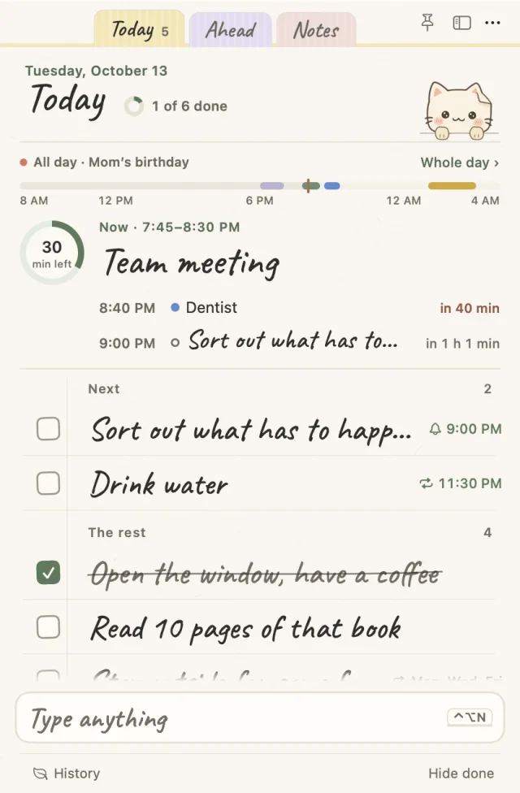

01 · The note
A note that puts now first
One sheet of paper with Today, Ahead and Memo tabs. The day strip at the top writes what's on now in large handwriting, with the time left in a ring beside it. What's next and today's list follow below.
